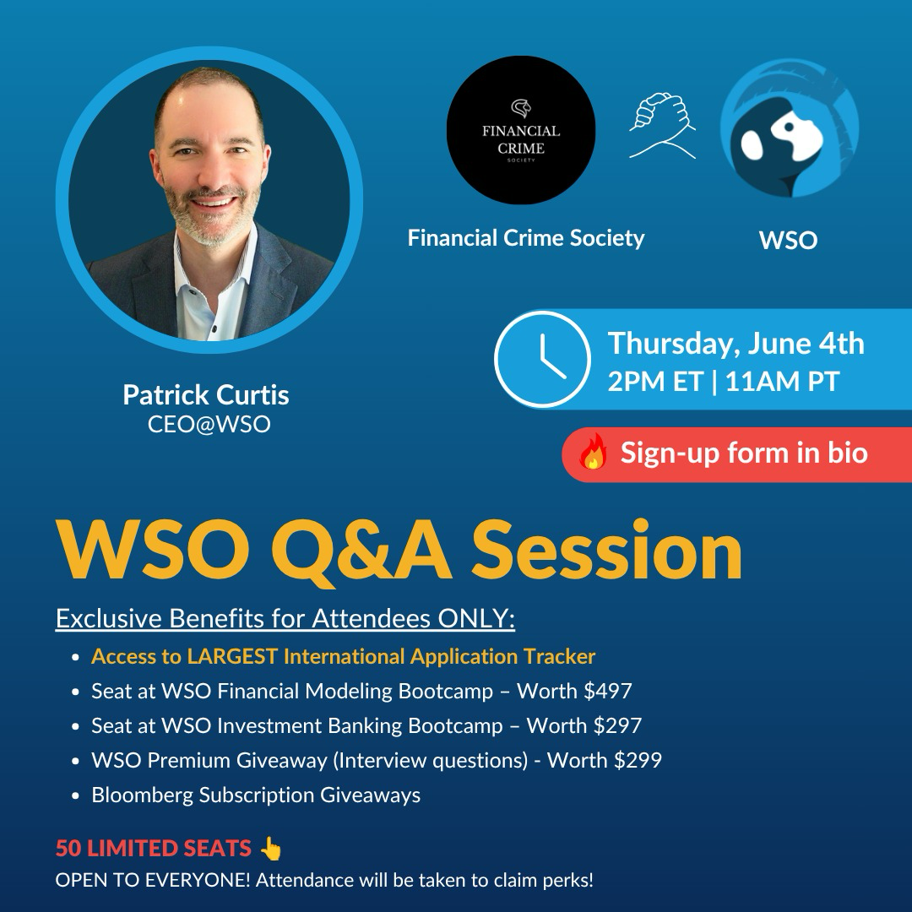

01
Our Mission
To raise awareness and build student capability in the fight against financial crime through education, research, and practical exposure.
A student-led society exploring AML/CFT, compliance, fraud, sanctions, governance, and financial crime risk through knowledge, collaboration, and real-world professional exposure.
To raise awareness and build student capability in the fight against financial crime through education, research, and practical exposure.
To become a leading student platform in Mauritius for advancing integrity, compliance, governance, and financial crime leadership.
A community of students interested in compliance, risk management, law, finance, governance, fintech, and ethical leadership.
We host learning sessions, discussions, workshops, case studies, and initiatives that connect theory with real-world practice.
Our focus areas are designed to help students understand the core pillars of financial crime risk, from prevention and detection to governance and professional decision-making.
Understanding frameworks used to prevent money laundering and terrorist financing.
Promoting ethical conduct, regulatory awareness, and control-based thinking.
Studying fraud typologies, red flags, controls, and prevention strategies.
Understanding global sanctions, screening, exposure, and business impact.
Exploring accountability, transparency, oversight, and institutional culture.
Identifying, assessing, and managing financial crime risks effectively.
Explore upcoming speaker sessions, professional discussions, and learning opportunities hosted by the Financial Crime Society.

A live online session focused on breaking into high finance, featuring career insights, industry perspectives, and a live Q&A with Wall Street Oasis speakers.
Stay UpdatedEvery project should produce something useful: a briefing, event, simulation, workshop, research note, or student resource.
Interactive sessions where members assess client risk, identify red flags, review ownership structures, and propose onboarding decisions.
Short student-led briefings covering fraud, sanctions, cyber-enabled financial crime, AML failures, and regulatory enforcement themes.
Discussions with professionals in compliance, governance, audit, law, risk advisory, fintech, and financial services.
This space will be updated as the society develops new initiatives, collaborations, workshops, and student-led outputs.
One mission to strengthen awareness around financial crime.
A growing community of driven students and future professionals.
Covering key pillars of financial crime and compliance.
Creating impact through knowledge, action, and collaboration.
This section will showcase society events, networking sessions, workshops, member activities, and collaborations.
Join a student community focused on financial crime awareness, compliance learning, governance, and professional development.